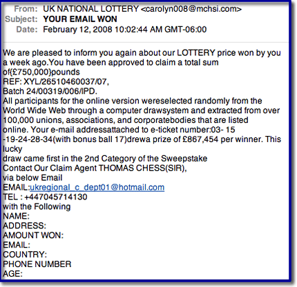

How to recognize an email hoax
The following five scenarios describe most email hoaxes:
Good email practices include:
Tips for dealing with email hoaxes and to avoid viruses.
Snopes the best source for factual information about rumors
Truth or Fiction.com - your email reality check
Hoax-Slayer is dedicated to debunking email hoaxes, thwarting Internet scammers, combating spam, and educating web users about email and Internet security issues.
Lesson Plan: Don't be fooled by a photograph from National Geographic
In this lesson, students will study images that we altered digitally, to create a desired effect. Students will discuss how a photograph conveys information, and how changing that photograph can change its message. This lesson plan is based on the National Geographic News story, "Shark 'Photo of the Year' Is E-Mail Hoax," which covers an urban legend based on a doctored photograph.